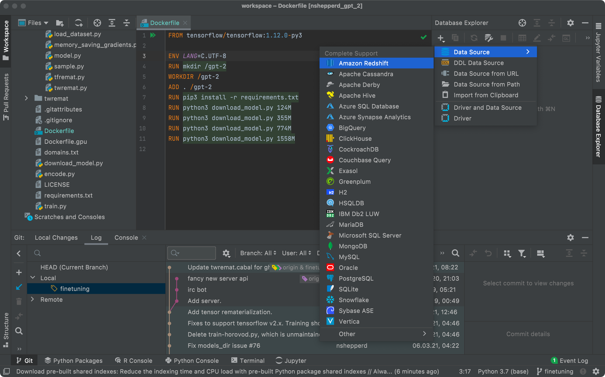

JetBrains : IDE DataScience
Qu'est - ce que la
La DataScience (science des données), est une science qui regroupe 10 à 12 domaines et qui permet à une entreprise quel que soit la notoriété, d’
L’éditeur de Logiciels JetBrains à récemment présenté son nouvel IDE pour les Data Scientific :
Les différents langages pris en compte sont : Python (résultat en tps réel), JavaScript, outils de BDD SQL et différents plugins. Différents graphiques et statistiques avancées sont également disponible
Pyhton

Outils BDD
Base de données SQL

Graph et Statistiques Avancées